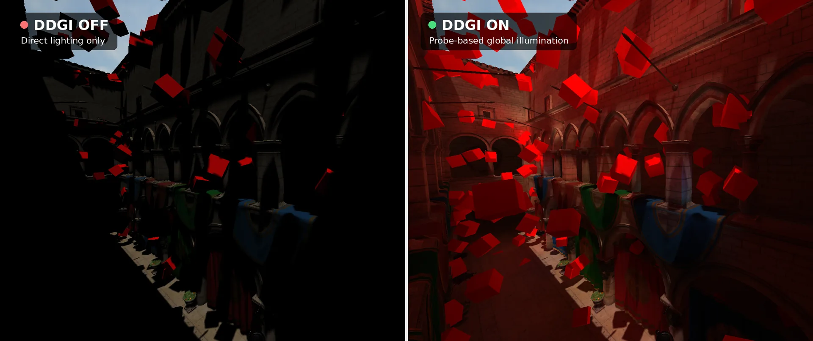
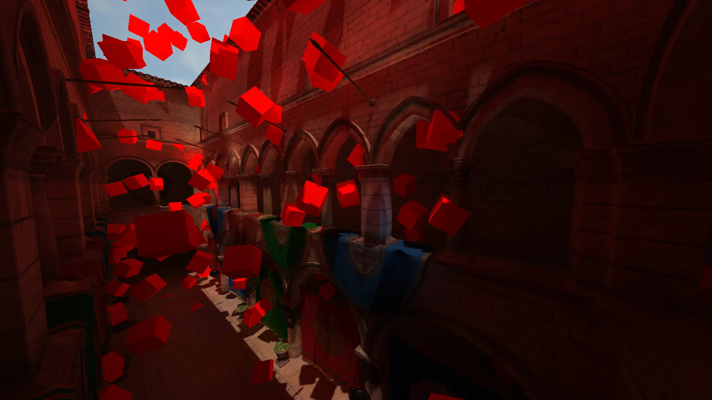
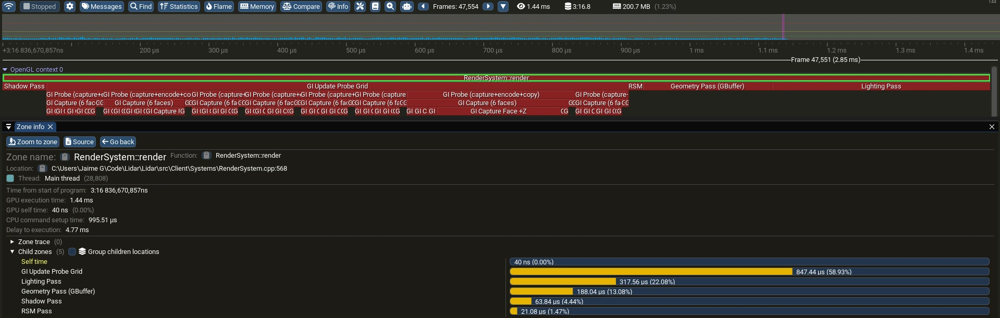
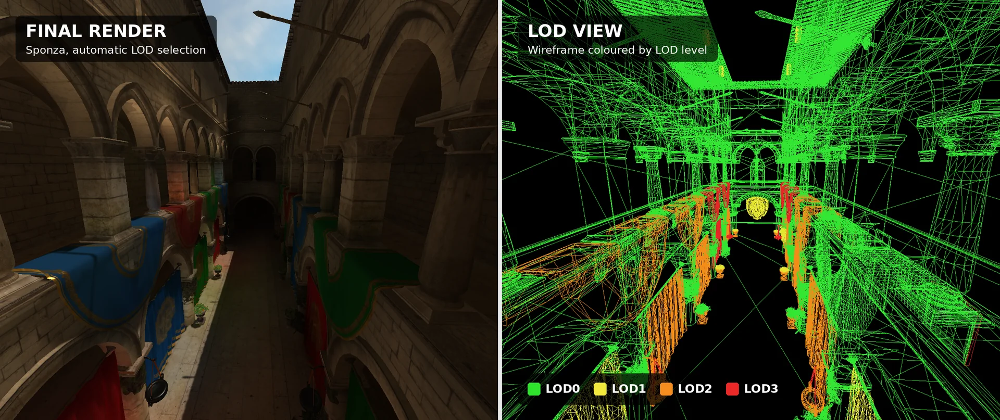
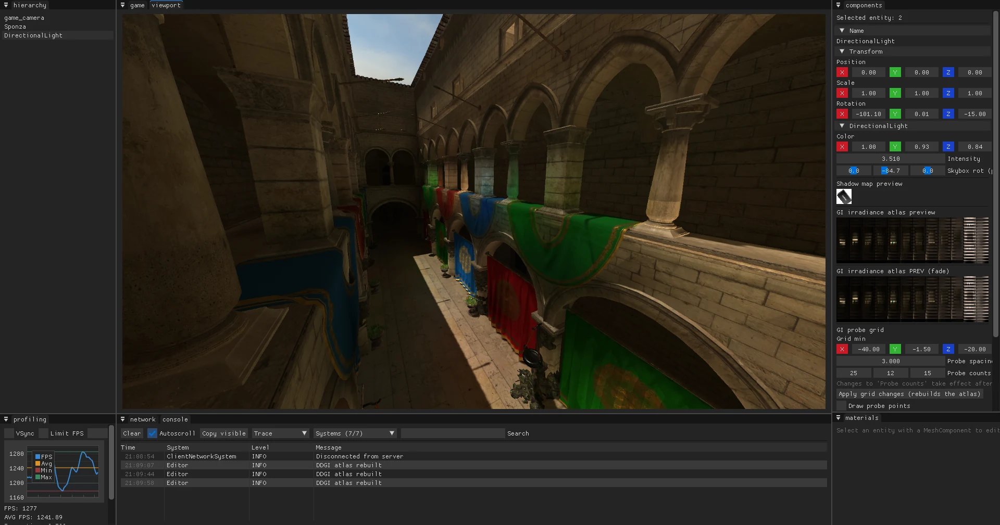
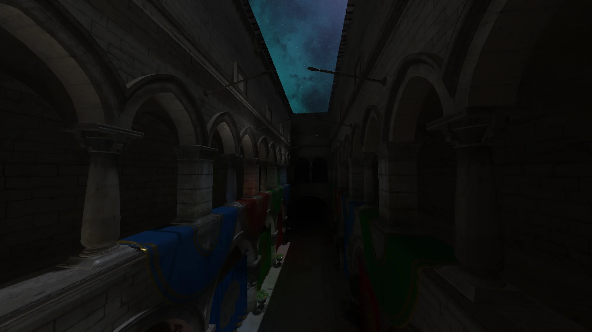
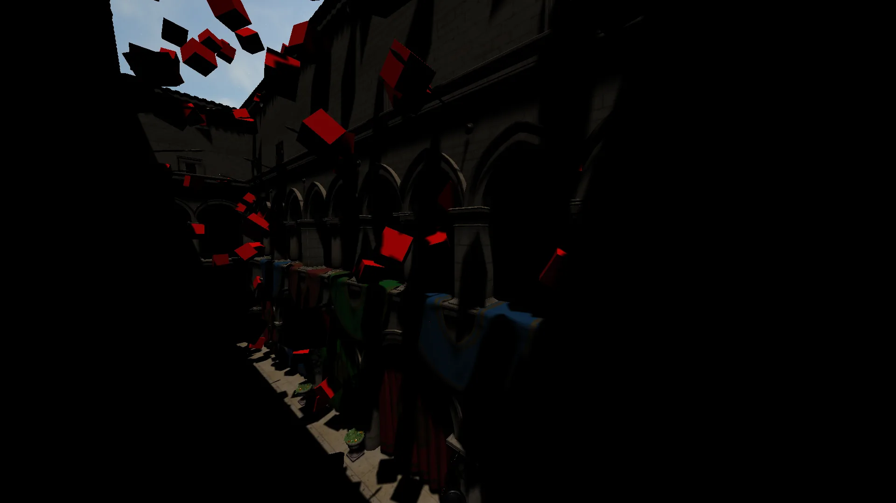

Open-World Multiplayer Engine
C++ | OpenGL 4.5 | Client-Server | Global Illumination
Work in progress, built from scratch since June 2026

Same camera, same frame. Left: direct lighting only. Right: our probe-based global illumination (DDGI).
- RoleEngine and Graphics Programmer
- Team2 engineers, co-developed with my teammate
- Timeline06/2026 to present
- StackC++, OpenGL 4.5, GLSL, EnTT, Dear ImGui, Tracy
Overview
An independent project we are building as the foundation for an open-world multiplayer survival game. The game targets runtime building and destruction, a day-night cycle and procedural terrain, so the engine is designed around a world that changes while people play in it.
- Client-server architecture. One CMake codebase builds the dedicated server, the game client, the editor and a profiling build.
- Modern renderer. Deferred pipeline with physically based shading, shadow mapping and real-time global illumination.
- Built to scale. Automatic level of detail, frustum culling and lighting that only updates where it changes.
- Measured, not guessed. Every optimization is profiled with Tracy before and after, and kept only if it improves the numbers.
Video
Lighting converging from a cold start, then day and night scenes with global illumination toggled on and off.
Key Results
Measured with Tracy on an AMD Radeon RX 7700 XT and Ryzen 5 5600X at 1920x1080, Sponza scene. Figures are for the global illumination pass only, not the full frame.
What We Built

Real-Time Global Illumination
A deferred renderer with Cook-Torrance PBR, hardware PCF shadows and DDGI, a probe-based technique that lets light bounce around the scene in real time. Compute shaders handle probe encoding and atlas updates, and each probe is captured in a single pass using layered cubemap rendering instead of geometry shaders.

Lighting That Settles
Updating thousands of probes every frame is expensive. Probes now stop updating once their lighting has converged and only refresh when it changes, with a smooth crossfade between updates. This cut the global illumination cost by 93%.

Automatic Level of Detail
A LOD system built on meshoptimizer that picks the right mesh detail based on how much of the screen an object covers. Shadow and lighting capture passes use their own, more aggressive LOD rules, and objects outside the camera are culled per submesh.

In-Engine Editor and Tooling
A Dear ImGui editor with docking and multiple viewports: scene hierarchy, component inspector, material editor, console, and profiling and network panels. The network panel graphs incoming packets by type and bandwidth in real time.

Architecture and Workflow
Built on an Entity-Component-System (EnTT) with a client-server split using GameNetworkingSockets. We profile every change and keep only what the numbers support. For example, we implemented multi-draw indirect rendering, measured it, and removed it for now because the current scene is too small to benefit. It stays on the roadmap for larger worlds.
Technical details for engineers
- Renderer: deferred, Cook-Torrance PBR, hardware PCF shadow mapping, reflective shadow maps (RSM), DDGI with octahedral irradiance and distance atlases.
- Probe capture uses single-pass layered cubemap rendering (instancing writes gl_Layer from the vertex shader).
- Probe settling: 8 probes per frame while converging, then updates stop until lighting changes. GI update 0.78 ms to 0.05 ms per frame on a 25x12x15 grid.
- Probe encoding: replaced a brute-force convolution with mipmap-based sampling, 665 µs to 14 µs per probe.
- LOD: meshoptimizer, screen-space error selection with world-scale correction, separate LOD policies for shadow and GI capture passes.
- Culling: per-submesh frustum culling for the main and GI capture passes.
- Libraries: EnTT, Dear ImGui, GameNetworkingSockets, spdlog, tinygltf, meshoptimizer, Tracy, GLM, GLFW, vcpkg.
Media Gallery

Roadmap
- Cascaded probe grids that follow the player, so lighting scales to a large open world.
- Cascaded shadow maps for sharper shadows near the camera.
- Multi-draw indirect with bindless textures for scenes with many more objects.
- Compressed GPU textures (KTX2 / BC7).
- Temporal anti-aliasing (TAA).
The source code is private. I am happy to walk through it in an interview.